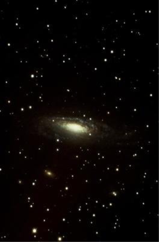
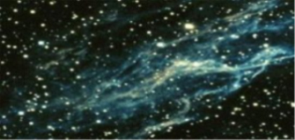

< 
星空浩瀚无垠，从看不见的这边延伸到看不见的那一边，宇宙中有很多星系
我们所生活的地球就是太阳系的一颗星球，八大行星，是指太阳系的八个大行星，
按照离太阳的距离从近到远，它们依次为水星(☿)、金星(♀)、地球(⊕)、火星(♂)、
木星(♃)、土星(♄)、天王星(♅)、海王星(♆或⛢ )。 太阳系又在银河系中
银河系
(英语:The Milky Way，别名银汉、天河、银河、星河、天汉等)，是太阳系所在的棒旋星系
，包括1000~4000亿颗恒星和大量的星团、
星云以及各种类型的星际气体和星际尘埃
，从地球看银河系呈环绕天空的银白色的环带。总质量约为太阳的2100亿倍
，隶属于本星系群，最近的河外星系是距离银河系4万2千光年的大犬座矮星系。
银河系呈扁球体，具有巨大的盘面结构，由明亮密集的核心、两条主要的旋臂
和两条未形成的旋臂组成，旋臂相距4500光年。太阳位于银河一个支臂猎户臂上
，至银河中心的距离大约是2.6万光年。
银河系的中央是超大质量的黑洞(人马座A*)，自内向外分别由银心
、银核、银盘、银晕和银冕组成。银河系中央区域多数为老年恒星(以白矮星为主 )，
外围区域多数为新生和年轻的恒星。周围几十万光年的区域分布着十几个卫星星系，
其中较大的有大麦哲伦星云和小麦哲伦星云。
宇宙中的行星分布有着一定的规律，
构成了许多星座，而其中最著名的就是
十二星座了星座的英文是"CONSTELLATION"，
意思是"星座" 、"星群";而占星学中所指的星座是"SIGN"，意思是"记号"、"标记"、
"象征"。在英汉字典中有这样的翻译:"Signs of Zodiac黄道十二宫"，因此，天文历法的十二星座与占星学
中所指的星座在实际意义上是不同的。如果你不是占星爱好者的话，还是按照天文历法的十
二星座实际日期来对照你的出生日期看你所属哪个星座。
所以我们热爱星空！
宇宙?即广宇自然。所有空间、时间、物质以及事物的总称。
自20世纪以来宇宙大爆炸学说一直被主流科学界公认为其起源理论。
大爆炸宇宙论是现代宇宙学中最有影响的一种学说。它的主要观点认
为宇宙曾有一段从热到冷的演化史。在这个时期里，宇宙体系在不断地膨胀
，使物质密度从密到稀地演化，如同一次规模巨大的爆炸。大爆炸理论认为:
宇宙是由一个致密炽热的奇点于约138亿年前一次大爆炸后膨胀形成的。
大爆炸理论的建立基于了物理定律的普适性和宇宙学原理这两个基本假设以
及科研工作者的实际观测。

我们又把宇宙叫做星空，仰望星空，脚踏实地，星空有着无限的魅力！